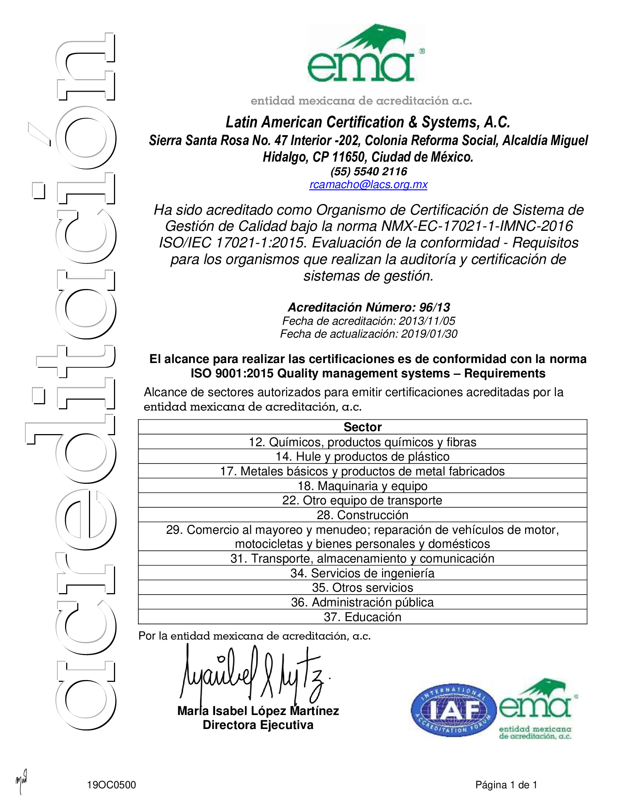
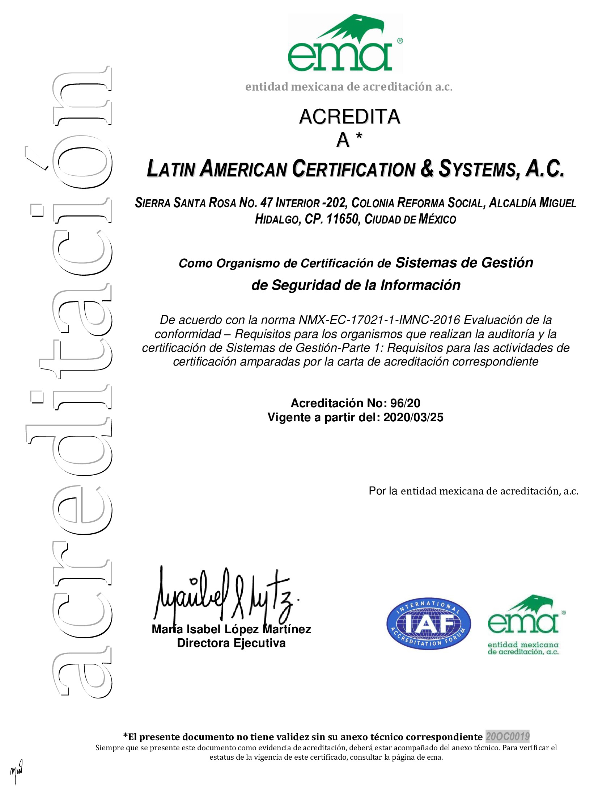
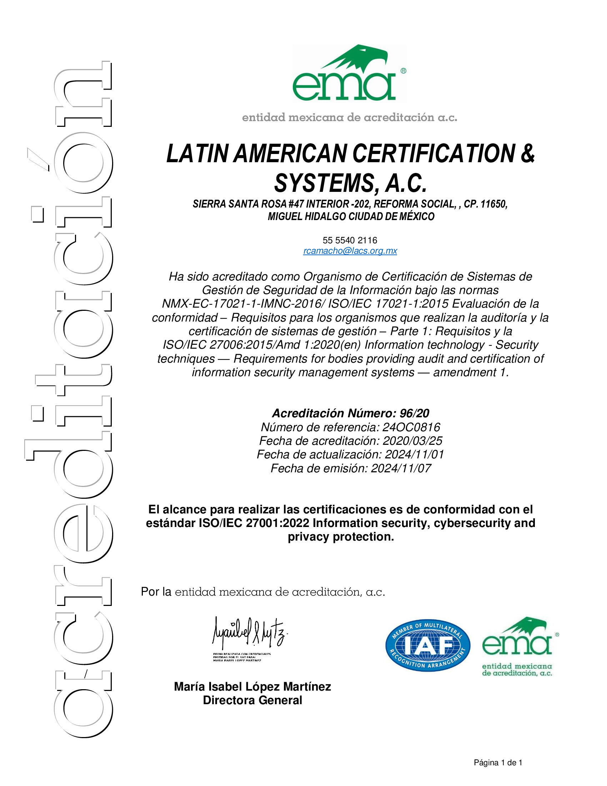
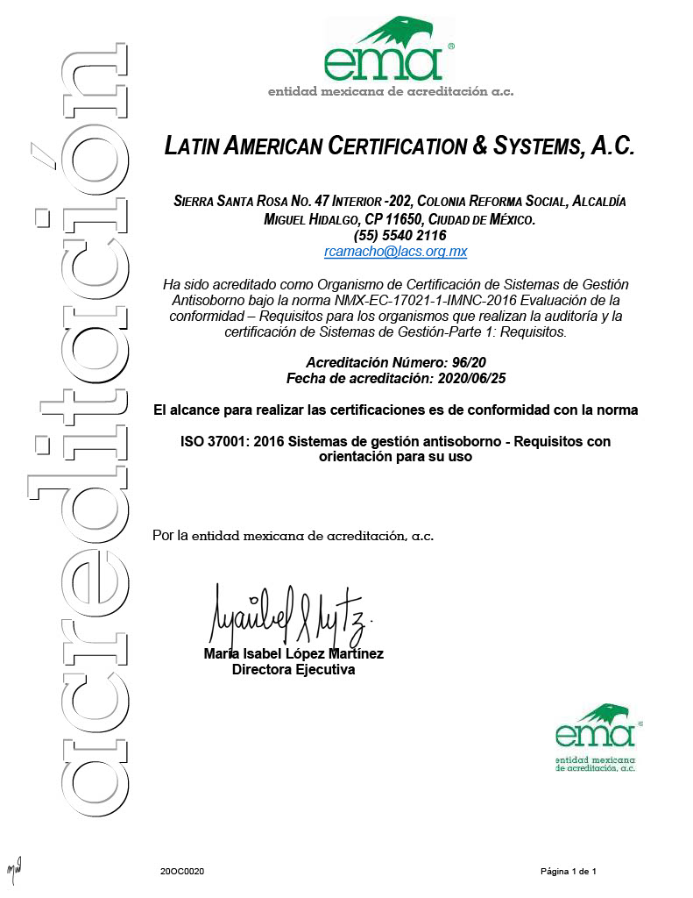
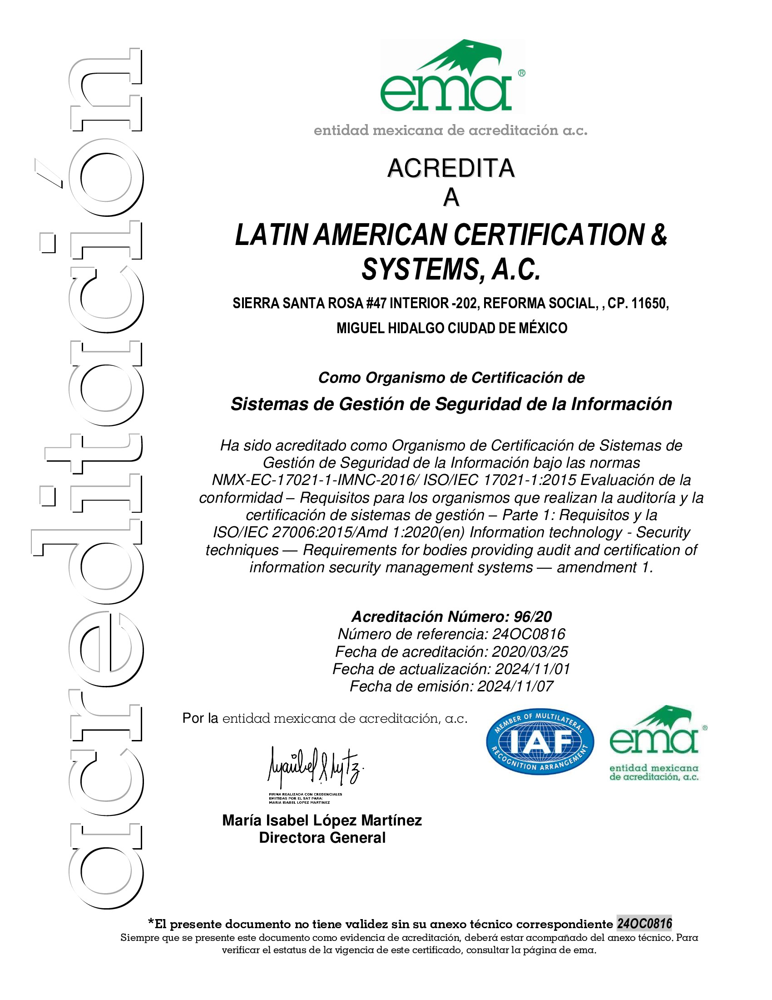

Más sobre nosotros
Preguntas frecuentes
Acreditaciones
Información sobre nuestras acreditaciones y certificaciones.
Acreditacion ISO 9001 Sectores
Acreditacion ISO 9001 como Organismo de Certificacion de Sistemas de Gestión de Calidad

Acreditacion ISO 27001 como Organismo de Certificacion de Sistemas de Gestión de Seguridad de la Información
Acreditacion ISO 27001:2022 Sistemas de Gestión de Seguridad de la Información
Acreditacion ISO 37001 Sistemas de Gestión Antisoborno
Diploma de Sistemas de Gestión de Seguridad de la Información
Consulta de Acreditaciones
Para consultar nuestras acreditaciones, puedes ingresar al sitio web de IAF, o bien escanear el codigo QR.